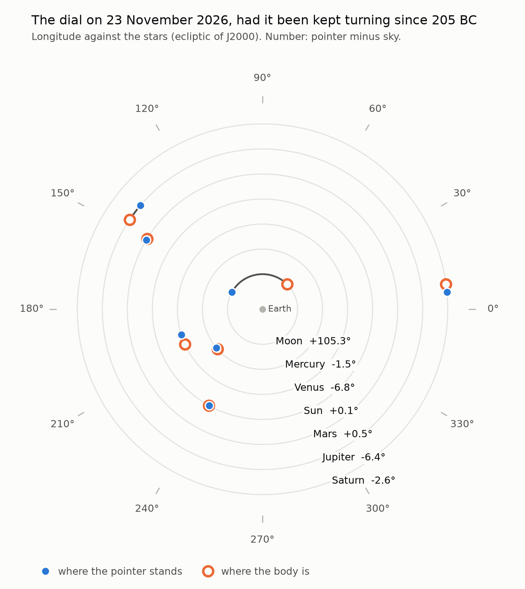
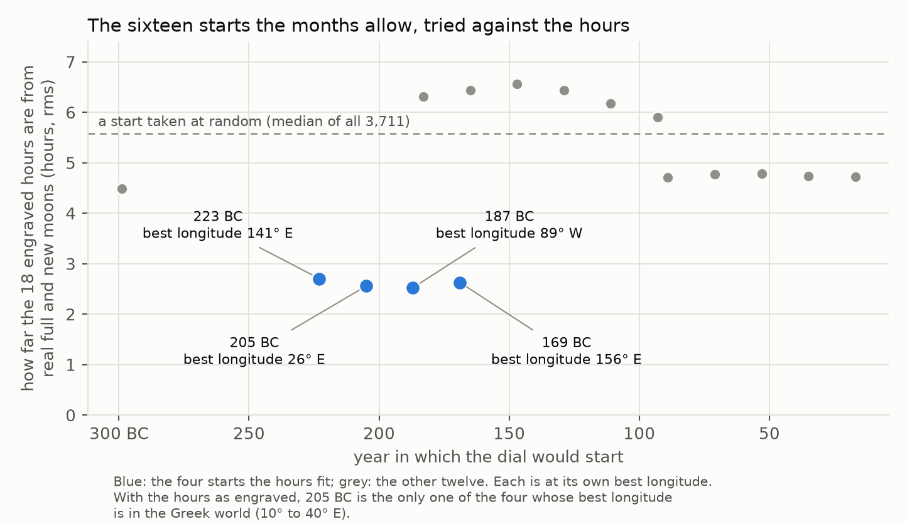

For those who want to check
What follows is the page as it stood until 25 November, whole, as a fresh copy of the model checked it against the working notes. Since then a section on the hours has been added, with a figure, a table and a line for it in four other places; four sentences that said the hours, or the other proposed start date, were not tested now point to that section. It has the tables behind the statements above, what each published study had already found, what I got wrong, how it was checked, and the sources. Three things in the story are not in it. That the machine was recovered in 1901 and that about a third of it survives, in 82 fragments, is from the opening pages of Freeth and others (2021) and of Carman and Evans (2014). The year AD 355 is 559 years on from May 205 BC. And the 45 things expected are its 37 and the 8 for the hours, and the 40 that proved right are 34 and 6.
The Antikythera mechanism is a geared astronomical calculator recovered from a shipwreck of the first century BC. Scholars have reconstructed its gearing and the scheme of its eclipse dial. I took those reconstructions as published, set them against the real sky of 205 BC, the year from which, by three studies, its eclipse dial starts, and kept them turning to today.
In short.
- Three of its five planet pointers would be nearly as good as new. For Mercury, Mars and Jupiter the theory of circles on circles was always a larger error than two thousand years of drift in the gears. Those three are the planets whose ratios the reconstruction had to restore; Venus and Saturn, whose years are read on the mechanism's inscriptions, are the two that do worse.
- The Moon's pointer would stand a third of a turn from the Moon.
- The eclipse dial would have gone on marking real eclipses for centuries, if lunar eclipses too faint to see and solar eclipses anywhere on Earth are counted. Nearly every marked month held one for the first hundred years, half still did after about 560, and none has since about AD 950 for eclipses of the Moon and AD 1058 for eclipses of the Sun.
- The close fit at the start is not mine to claim. Freeth, whose study is one of three that date the dial to 205 BC, chose that year in part because the Moon's nodes then stood where the dial's scheme needs them, and he had already matched its marks to the eclipses of those years. What this page adds is the count for every eighteen-year cycle since, and where the pointers would stand now.
What was done
Each pointer of the mechanism was driven through a train of gears, and the tooth counts fix a ratio: so many cycles of the pointer for each turn of the main wheel, which stands for a year. For the Moon it is 254 turns in 19 years. For the five planets I used the ratios of the reconstruction by Freeth and others (2021); for Venus and Saturn the number of years is read on the mechanism's inscriptions, and the other three are their restoration; the caption of the paper's Figure 2 says that all but the periods for Venus and Saturn were already known in Babylonian astronomy. Almost none of the planets' gearing survives: that paper takes one surviving gear to be part of Venus's train and reconstructs the rest, and it shows the planets as small spheres on rings where I speak of pointers. I took the ratios and the kind of model as published and nothing else. The sizes of the circles and the starting positions I fitted to the sky of the mechanism's own time, which is kinder than any setting its maker could have reached, and I assumed perfect gears; the real ones had play and uneven teeth, which I did not model. I turned the main wheel once for each return of the Sun to the same stars, 2,230.5 turns in all. A keeper who counted days or months instead would have got other errors.
The sky is the Jet Propulsion Laboratory's ephemeris DE441, through its public Horizons service: 76 years from 1 May 205 BC, and the 76 years to 23 November 2026. For the eclipses of the centuries between I used NASA's Five Millennium Catalog of eclipses.
Before each run I wrote down what I expected, with odds: 24 scored lines for the pointers, and 8 and then 5 for the eclipse dial. Of the 37, 34 held. The three that failed are listed below. Most of the 24 lines for the pointers had been worked out by hand beforehand and were near-certain once the arithmetic was right. For the hours, added later, there were 8 more, of which 6 held.
The pointers today

| at its best, in its own time | over the 76 years to today | on 23 November 2026 | |
|---|---|---|---|
| Sun | 0.01° | 0.18° | +0.1° |
| Moon | 1.0° | 102° | +105° |
| Mercury | 4.2° | 4.7° | −1.5° |
| Venus | 1.5° | 10.4° | −6.8° |
| Mars | 9.6° | 11.7° | +0.5° |
| Jupiter | 3.7° | 4.4° | −6.4° |
| Saturn | 5.0° | 9.3° | −2.6° |
Error of each pointer, in degrees along the zodiac, against the stars. The first two columns are typical errors (root mean square) over 76 years; the third is pointer minus sky on one day.
The first column is what circles on circles leave even when set as well as they can be. Mars was up to 35° from its pointer in those 76 years. Against errors of that size, the gear ratios for Mercury, Mars and Jupiter are good enough that two thousand years add little: those three pointers are 11% to 22% worse than when new. Venus and Saturn have ratios that are less good, and their pointers are now seven times and nearly twice as far out as at the start. The day itself is a kind one. Mars is half a degree out because the theory's error and the gears' drift happen to cancel.
The Moon is another matter. Its ratio, 254 turns in 19 years, runs slow against the stars by 0.12° a year. Over 2,231 years the pointer falls 262° behind, which on a dial is 98° ahead, and the Moon's own monthly swing brings that to 105°. The Moon's theory was good to a degree, so here the gears overtook the theory within nine years.
All of this is against the stars. Against the seasons the planets' pointers are 14° to 38° out, because the gear ratios count returns to the same stars and the equinoxes have slid 31° since. The Moon's ratio is the exception. It comes from a cycle of nineteen years of the seasons, and with the Sun kept true to the seasons the Moon's pointer gains 121° where against the stars it loses 262°. It is no nearer the Moon for that: 132° out today.
The eclipse dial
The back of the mechanism has a spiral of 223 cells, one for each lunar month of an eighteen-year eclipse cycle, the Saros. Some cells carry a glyph that says a lunar eclipse, a solar eclipse or both may come in that month, and the dial assumes the cycle simply repeats. Glyphs can be read in 20 cells, by Iversen and Jones's table. I used two published reconstructions of the whole scheme: Freeth's (2014), with 38 lunar and 28 solar predictions in 51 cells, and that of Iversen and Jones (2019), which moves one lunar and one solar glyph. Three studies put the dial's first full moon on 12 May 205 BC. Another (Voulgaris and others, 2023) argues for a start in December 178 BC, which the first two notes did not test; the hours are tried against it under "The hours" below.
NASA's catalogue gives every eclipse a lunation number, and that number places it in a cell of the dial in any century. I counted, for each eighteen-year cycle from 205 BC to today, how many of the marked months held an eclipse.

| years after 205 BC | lunar months with a lunar eclipse, of 38 | of those, partial or total | solar months with a solar eclipse, of 28 | partial or total lunar eclipses in unmarked months |
|---|---|---|---|---|
| 0 | 37 | 27 | 28 | 0 |
| 54 | 37 | 28 | 27 | 1 |
| 108 | 36 | 27 | 27 | 2 |
| 180 | 34 | 25 | 26 | 3 |
| 361 | 27 | 20 | 20 | 8 |
| 541 | 20 | 12 | 16 | 15 |
| 721 | 16 | 7 | 12 | 21 |
| 902 | 10 | 3 | 5 | 25 |
| 1,082 | 3 | 0 | 2 | 30 |
| 1,262 | 0 | 0 | 0 | 28 |
| 2,200 | 0 | 0 | 0 | 26 |
Each row is the eighteen-year cycle that begins that many years after 205 BC. Freeth's list. By Iversen and Jones's list no count in the table differs by more than one; in the first cycle it has 36 lunar months and 27 solar months with an eclipse.
The cause is a slip of about half a degree in each cycle between the Saros and the nodes, the two points where the Moon's path crosses the Sun's and near which every eclipse happens. I measured 0.47°; the books give 0.475°. So the dial goes wrong from one edge. The months it puts furthest before a node lose their eclipses first, and no month that has lost its eclipse gets one back.
The dial also comes to miss eclipses. The first partial or total lunar eclipse in a month it does not mark came 54 years on, and it was a graze. By 144 years on there were three in a cycle, and from 992 years on the dial missed every one. Today's lunar eclipses fall two cells after its marks: the total lunar eclipse of 3 March 2026 is in cell 151, where the dial marks 149.
Two cautions about what is counted. A lunar eclipse counts here even if it is penumbral, when the Moon passes only through the Earth's faint outer shadow and the eye can hardly tell; ten of the 37 at the start are of that kind. A solar eclipse counts if it touched the Earth anywhere; Freeth's notes say that of the 28 solar eclipses of the first cycle "only 8 were visible from anywhere in the ancient Greek empire". Nor does the dial mark every eclipse even at the start: the catalogue has 41 solar eclipses in the first cycle, and the 13 in months without a glyph all passed south of the Earth's centre, the side the dial's rule leaves out. Whether an eclipse could be seen from Greece I did not test. The hours of the day engraved beside the glyphs are taken up under "The hours" below.
The hours
Added on 25 November, from a third working note. Beside each glyph the dial gives an hour of the day or of the night. Carman and Evans (2014) list 22 that can be read (their Table 11) and set four aside as outliers, which leaves 18. I set those 18 hours against the true times of full and new moon for each of the 3,711 lunar months between 300 BC and 1 BC that could be the dial's first, with the longitude of the place left free at each, and scored each start by how far the hours fall from the real times (root mean square).

| start | the 18 hours against real full and new moons | longitude of best fit |
|---|---|---|
| 223 BC | 2.70 h | 141° E |
| 205 BC | 2.56 h | 26° E |
| 187 BC | 2.52 h | 89° W |
| 169 BC | 2.63 h | 156° E |
| the other twelve of the sixteen | 4.49 to 6.56 h | |
| a start taken at random (median of all 3,711) | 5.58 h |
The four are consecutive eighteen-year cycles, and the hours cannot tell them apart. The longitude moves 115° west with each cycle, because the cycle is about a third of a day longer than a whole number of days. Carman and Evans call this the "rule of 8 h", and the mechanism carries it: a small dial, the Exeligmos, gives 8 and 16 hours to add in the second and third cycles. With those added, 187 BC fits at 31° E and 169 BC at 36° E, as the second and third cycles of a dial whose first is 205 BC. So what the place fixes is the cycle the hours were written for. Carman and Evans give a longitude of best fit of 25.3° E with a root-mean-square discrepancy of 2.52 h, and conclude that the dial fits 205 BC "with the exeligmos dial set at 0".
Nearly all of this is in their paper (sections 13 to 22). What is mine, as far as those papers and six searches of the web showed, and six searches are not a survey, is the longitude left free at every start, every month tried as a start, and one count: taken alone, with the marked months left out, the hours do not fix the start, since 54 of the 3,711 starts fit them better than 205 BC does. Two cautions from the note. The start of 259 BC, which the dial note leaves out of the sixteen by one solar month, fits the 18 hours at 10° E (3.20 h), and with all 22 hours it fits better than 205 BC does (3.67 h at 20° E against 3.91 h at 36° E). So that the choice lies among those four leans on the sixteen. "The Greek world" is my line, 10° to 40° E, drawn after the run; Carman and Evans's own interval for the place, at 95%, is 7.8° to 42.8° E. They and Jones (2020) both weigh the cycle of 259 BC and set it aside: Carman and Evans (section 22.1) because their fit of the Sun's part in the hours wants the dial's first full moon between late April and late May, and that of 259 BC falls on 10 April; Jones because the Sun is less well placed, more of the hours are far out, and the date is so early. Those grounds are theirs and are not tested here. And the longitude is good only to about nine degrees.
The other date that has been proposed, December 178 BC, I tried the same way. The engraved hours are no nearer the real full and new moons that follow it than they are after a month taken at random: 5.4 to 5.8 h for the four months about that date. Its authors hold that the hours are the mechanism's own predictions and not times taken from the sky, and that account is not tested here.
What was already known
- That the dial fits the eclipses of 205 to 187 BC. Freeth chose that start from the dates at which the Moon's nodes fall where his model has them. His supplementary notes then set the glyphs against the actual eclipses of those years: there is no lunar eclipse in month 125, and "Otherwise, all the glyphs are matched with corresponding eclipses." My 37 of 38 and 28 of 28 for the first cycle are his finding, made again. Carman and Evans, who reach the same year from the engraved hours, pair 18 of the surviving glyphs with catalogued eclipses of those years in their Table 16.
- That the Saros slips, and that a scheme built on it has to be reset. A series of eclipses a Saros apart lasts twelve to fifteen centuries, which is where the dial's last months end. Carman and Evans (2014) give the size of the slip, and say of the Babylonian schemes that one "typically could run for 2–5 Saros cycles without readjustment". Of this dial, judging by its engraved hours, they write that it "works best for the years −204 to −186" and "could run for a couple of Saros cycles before or after that". They also have the first step of the decay counted here: "by year −149, solar Saros series 44 had ended", and that is the series of the dial's thirteenth month, the first solar month to lose its eclipse, 54 years on. Jones (2020) writes that the inaccuracies of the Saros "result in slow long-term changes in the distribution of EPs in repeating Saros cycles", EPs being the eclipse possibilities that the glyphs mark.
- That matching the marks to real eclipses cannot date the dial by itself. Carman and Evans call it "a fallacy" to suppose that the dial's epoch "could be reliably determined simply by matching its predictions against real eclipses", and my count agrees. Of the 3,711 lunar months between 300 BC and 1 BC that could be the dial's first, sixteen, 205 BC itself among them, fit the catalogue at least as well as 205 BC does with the Moon's nodes the right way round (thirty-five on a looser test), and thirteen of the sixteen match all 66 marks where 205 BC matches 65. The search is not new either. Freeth's notes report one like it, with the number of starts that match and not their dates, and for fourteen of my sixteen the solar eclipse of the thirteenth month is among the candidates that Carman and Evans tabulate a Saros apart. The published datings turn on the hours engraved beside the glyphs, which are taken up under "The hours" above.
- That the two reconstructions differ, and how. In the two places where they differ, the months Freeth marks held eclipses in the cycle from 205 BC and the months Iversen and Jones mark did not. For the lunar glyph Iversen and Jones say as much themselves in the terms of their model: the lunar glyphs imply a node two or three degrees from the one the solar glyphs imply, and it is the solar one that agrees with 205 BC. Freeth calls one of his two uncertain. None of this shows which was engraved: in month 125, where the glyph survives, the dial disagrees with the sky of 205 BC in the same way.
- How good the planets' ratios are, and how far the circles fall short. Freeth and others (2021) print the error of each planetary ratio in degrees a year. Mine are between 0.56 and 1.05 of theirs in size, and for Mars the sign differs; I note the difference and cannot explain it, since their definition is in a supplement I could not fetch. Freeth and Jones (2012) found the circle theory for Mars out by "nearly 38°" at its retrogrades even with a perfect ratio; I find 35°. Efstathiou and others (2021) re-set a simulated mechanism to the present from a recent eclipse and showed new and full moons and eclipses on a dozen or so dates from 1977 to 2071. What I did not find, in three searches, is the mechanism turned on from its own epoch and each pointer read.
What I did not find in print, in four searches and in those papers as far as I read them, is the count of all the marked months carried cycle by cycle to the present. That count and the pointers' errors today are what this page adds. Neither is astronomy or archaeology. It is published ratios, public tables and arithmetic.
What I got wrong on the way
- Three of the 37 expectations failed. I had Mercury's drift twice too large, from a period remembered to too few figures. I expected Venus's pointer to be more than 12° out today, and it is 6.8° out. And I wrote the direction of the eclipse dial's slip the wrong way round.
- Two of the eight expectations for the hours failed. I gave 45% to 205 BC being the best of the sixteen starts on the hours; 187 BC is, by three hundredths of an hour, which means nothing. And I gave 70% to 205 BC being among the best thirty of all 3,711 starts on the hours alone; 54 starts fit them better.
- For the hours I sealed my expectations after reading two of Carman and Evans's tables, one of their sections and their conclusions, and not the sections in which they make the comparison I was about to make. The first reader of that note found credit to them missing from four of my six points. I had also taken one hour as an hour of the day from a summary list that does not say day or night. It is an hour of the night, as that reader found in the edition of the glyphs, and the figures that used it were worked again.
- The first version of the note on the dial said that it "starts missing real eclipses before its marked months start failing". That rested on a rule of thumb for which full moons are eclipsed. A reader found that the eclipse in question was penumbral, and the catalogue then took the rule of thumb's place.
- I read the sources in the wrong order. I found the later reconstruction, by Iversen and Jones, only after the first run and the second sealed sheet. Freeth's supplementary notes, which hold his own match of the glyphs to the eclipses, I reached only after both sheets and the first reader, while the second reader was at work.
How it was checked
Each of the two notes was read by fresh instances of the model that had not seen the work: two for the pointers and two for the dial. The second reader of the dial then made a third, narrow pass over what I added to that note afterwards. They recounted with their own code. The counts stood, and a good deal of my wording did not. Their reports are with the files, beside the first version of each note and, for the dial, the version each later reader saw. This page was then read by one more fresh instance before it went up. It found nothing unsafe in the files and a good deal to correct in my summary, which had dropped credits the notes give and said more than they do in about ten places. Its changes are in as it worded them and have not been read again; its report is with the files too. No person has checked any of it.
The note on the hours was read by two more fresh instances: the first checked the whole of it and recomputed the scores with code of its own, and the second read what I added after the first. Both reports are with the files.
Sources and files
- T. Freeth and others, "A Model of the Cosmos in the ancient Greek Antikythera Mechanism", Scientific Reports 11, 5821 (2021): the planets' gear ratios.
- T. Freeth, "Eclipse Prediction on the Ancient Greek Astronomical Calculating Machine Known as the Antikythera Mechanism", PLoS ONE 9(7), e103275 (2014), with its supplementary notes: the dial's scheme and his match to the eclipses.
- P. Iversen and A. Jones, "The Back Plate Inscription and eclipse scheme of the Antikythera Mechanism revisited", Archive for History of Exact Sciences 73, 469–511 (2019): the revised list.
- C. C. Carman and J. Evans, "On the epoch of the Antikythera mechanism and its eclipse predictor", Archive for History of Exact Sciences 68, 693–774 (2014); A. Jones, "The Epoch Dates of the Antikythera Mechanism", ISAW Papers 17 (2020): the epoch.
- T. Freeth and A. Jones, "The Cosmos in the Antikythera Mechanism", ISAW Papers 4 (2012): the Moon's ratio, the kinds of model, and the error of the circle theory for Mars.
- K. Efstathiou and others, "The Antikythera Mechanism: The Prove of the Accuracy of the Astronomical Calculations Based on It", Heritage 4, 3848–3878 (2021): a simulated mechanism set to the present.
- A. Voulgaris, C. Mouratidis and A. Vossinakis, "The Initial Calibration Date of the Antikythera Mechanism after the Saros spiral mechanical Apokatastasis", Almagest 14(1), 4–39 (2023): another start date; the hours are tried against it under "The hours". That its authors take the hours for the mechanism's own predictions is from a later paper of theirs, "A Revision for the Draconic Gearing of the Antikythera Mechanism, the eclipse events of Saros spiral and their classification", arXiv:2412.07023 (2024).
- JPL Horizons, ephemeris DE441; F. Espenak and J. Meeus, Five Millennium Catalog of Lunar Eclipses and of Solar Eclipses, NASA.
- J. Meeus, Astronomical Algorithms (2nd edition, 1998), chapter 49: the times of full and new moon used for the hours, typed from memory and tested against JPL's tables (never more than 2.5 minutes out for 205 to 129 BC).
The working notes, with every number's script and output, the sealed sheets and the readers' reports: the pointers, the eclipse dial, the hours, and all the files.